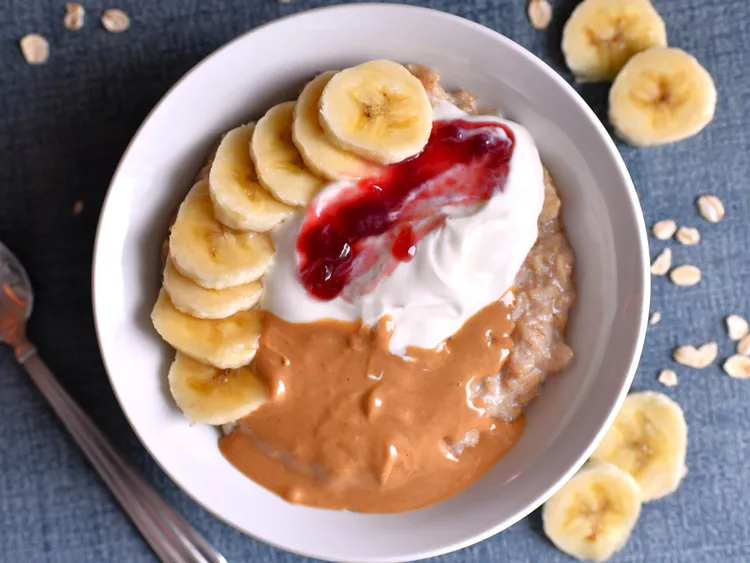

Peanut Butter and Yogurt Oatmeal

Ingredients
- 1/2 cup rolled oats
- 1/2 banana sliced
- 1 pinch salt
- 1 cup water
- 1/4 cup greek yogurt
- 2 tablespoons strawberry jam
- 1 tablespoon peanut butter
- 1/2 teaspoon ground cinnamon (optional)
Steps
- Combine oats, banana, cinnamon, and salt in a microwave-safe bowl
- Add water and stir
- Cook in microwave for 2-3 minutes until water is absorbed
- Stir to evenly distribute cinnamon
- Let stand for roughly 3 minutes until slightly cooled
- Spoon Greek yogurt, strawberry jam, and peanut butter over oatmeal
- Stir and enjoy